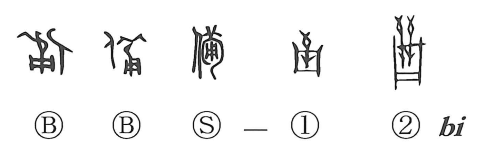

備

Kun: sonaeru, sonawaru, tsubusani | On: bi
to prepare ・ to provide ・ to be furnished ・ fully ・ in detail
Explanation
備 adds 人, a person, to the sound element 𤰇, a quiver containing arrows. The person carries it on the back, ready to go into battle. The older forms make the arrows and their container visible.
From being equipped for combat, 備 broadens to preparing for any undertaking and providing whatever will be needed. It can describe the act of making ready or the condition of having the necessary equipment and resources.
Preparation requires care in every part. The character consequently also means completely or in detail: all the requirements have been considered and supplied. This thoroughness connects the original armed readiness with its later general uses for provision and preparedness.